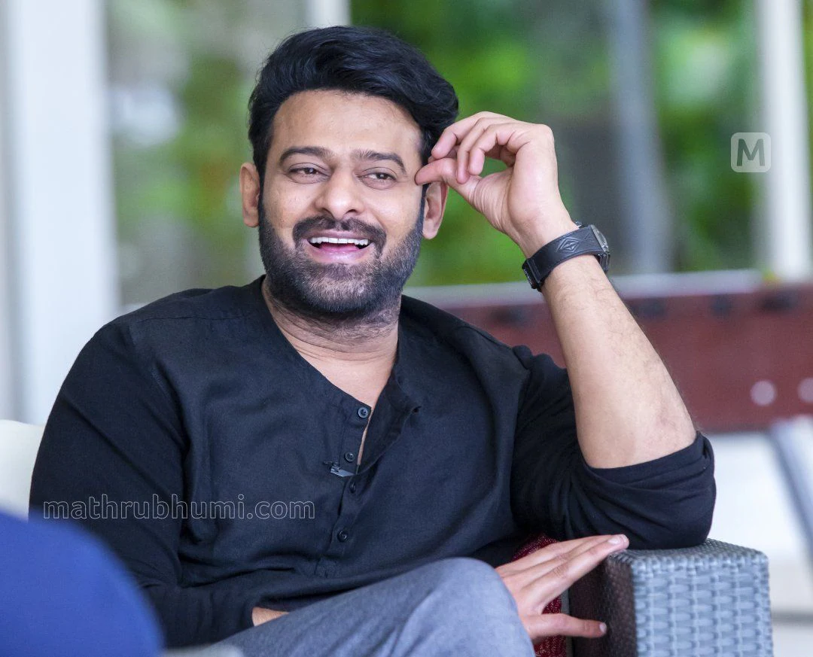
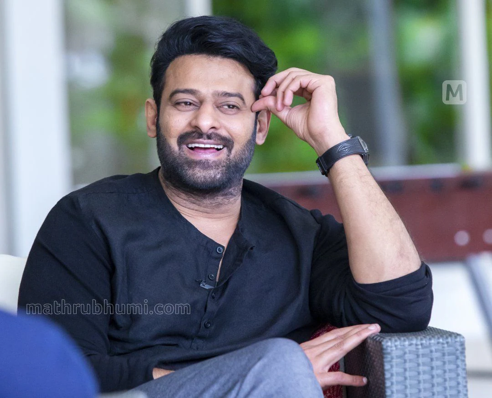

Allu Arjun (born 8 April 1982) is an Indian actor who works in Telugu cinema. One of the highest-paid actors in Indian cinema,[1] Allu Arjun has been featured in Forbes India's Celebrity 100 list since 2014.[2] He is a recipient of several awards including a National Film Award, six Filmfare Awards, and three Nandi Awards.[3] He is considered to be one of the finest dancers in Indian cinema.[4] He is popularly referred to as "Stylish Star" and "Icon Star".[5] Allu Arjun made his debut with Gangotri in 2003. He rose to prominence starring in Sukumar's cult classic Arya (2004) for which he earned a Nandi Special Jury Award.[6] He consolidated his reputation with the action films Bunny (2005) and Desamuduru (2007). In 2008, he starred in the romantic drama Parugu for which he won his first Filmfare Award for Best Actor – Telugu.[7] Allu Arjun went on to star in notable films such as Arya 2 (2009), Vedam (2010), Julayi (2012), Race Gurram (2014), S/O Satyamurthy (2015), Rudhramadevi (2015), Sarrainodu (2016), DJ: Duvvada Jagannadham (2017), Ala Vaikunthapurramuloo (2020) and Pushpa: The Rise (2021). His performances as a lower-class cable operator in Vedam and as a carefree street smart man in Race Gurram won him two Filmfare Awards for Best Actor – Telugu. He also won the Filmfare Award for Best Supporting Actor for his portrayal of prince Gona Ganna Reddy in Rudhramadevi. He received high acclaim for his performance in Pushpa: The Rise, which emerged as the highest-grossing Indian film in 2021 and ranks among the highest-grossing Telugu films of all time. The film also earned him his first National Film Award for Best Actor, and fourth Filmfare Award for Best Actor – Telugu.

Konidala Pawan Kalyan[3] (born Konidala Kalyan Babu; 2 September 1971[2]) is an Indian politician and actor who has been serving as the 10th deputy chief minister of Andhra Pradesh since June 2024. He is also serving as the Minister of Panchayat Raj, Rural Development & Rural Water Supply; Environment, Forests, Science & Technology in the Government of Andhra Pradesh. He is the founder and president of the Jana Sena Party. As an actor, Kalyan primarily works in Telugu cinema and is known for his unique style and mannerisms. He has a huge fan base[4] and is one of the highest-paid actors of Indian cinema. He has been featured in Forbes India's Celebrity 100 list multiple times since 2013. Kalyan is the recipient of a Filmfare Award South and a SIIMA Award among other accolades.[8] Kalyan made his acting debut in the 1996 film Akkada Ammayi Ikkada Abbayi, but rose to prominence with the dramas Gokulamlo Seeta (1997) and Suswagatham (1998). He achieved stardom for his performance in Tholi Prema (1998), which won the National Film Award for Best Feature Film in Telugu that year. Kalyan established himself as a leading actor with successful projects such as Thammudu (1999), Badri (2000), Kushi (2001), Jalsa (2008), Gabbar Singh (2012), Attarintiki Daredi (2013), Gopala Gopala (2015), and Bheemla Nayak (2022). He received the Filmfare Award for Best Actor – Telugu for Gabbar Singh. Kushi and Attarintiki Daredi held the record of being the highest-grossing Telugu film of all time.[9] In addition to acting, he produces films under the banners Anjana Productions and Pawan Kalyan Creative Works
Nandamuri Taraka Rama Rao Jr. (born 20 May 1983), popularly known by the initialism Jr. NTR, is an Indian actor who primarily works in Telugu cinema.[1] He is one of the highest-paid actors in Indian cinema and has been featured in Forbes India's Celebrity 100 list since 2012.[2][3] Referred to in the media as the "Man of the Masses", he has appeared in over 30 films.[4] He is a recipient of several accolades including, two Filmfare Awards, two Nandi Awards, and four CineMAA Awards. Grandson of Telugu matinee idol, N. T. Rama Rao, who was also the former Chief Minister of the Indian state of Andhra Pradesh,[5] Rama Rao appeared as a child actor in works such as Brahmarshi Viswamitra (1991), and Ramayanam (1997), the latter winning the National Film Award for Best Children's Film for that year. He made his debut as a lead actor with Ninnu Choodalani (2001). He achieved his breakthrough with the coming-of-age film Student No. 1 (2001) and the action drama Aadi (2002). He went on to star in other commercially successful films such as Simhadri (2003), Yamadonga (2007), Adhurs (2010), Brindavanam (2010) and Baadshah (2013). Following a brief setback, he made a career comeback with the 2015 action drama Temper. Further commercial successes came with Nannaku Prematho (2016), Janatha Garage (2016), Jai Lava Kusa (2017), Aravinda Sametha Veera Raghava (2018), and RRR (2022), some of which rank among the highest-grossing Telugu films and Highest-grossing Indian films
Uppalapati Venkata Suryanarayana Prabhas Raju ([pɾabʱaːs] born 23 October 1979), known mononymously as Prabhas, is an Indian actor who predominantly works in Telugu cinema.[4] He is one of the highest-paid actors in Indian cinema and has been featured in Forbes India's Celebrity 100 list since 2015.[5][6][7][8] Referred to in the media as the "Rebel Star", he has appeared in over 20 films, and has received seven Filmfare Awards nominations, a Nandi Award, and a SIIMA Award.[9][10] Prabhas made his acting debut with the drama Eeswar (2002), and later attained his breakthrough with the action romance Varsham (2004). He went on to star in other commercially successful films such as Chatrapathi (2005), Bujjigadu (2008), Billa (2009), Darling (2010), Mr. Perfect (2011), and Mirchi (2013), winning the Nandi Award for Best Actor for his performance in the lattermost.[11][12] He went on to play a dual role in the epic action duology Baahubali: The Beginning (2015) and Baahubali 2: The Conclusion (2017), with the latter emerging as the highest-grossing Indian film at that point, establishing Prabhas as the first pan-Indian star.[13][14] After a brief period of decline, he made a career comeback with the action drama Salaar: Part 1 – Ceasefire (2023) and the science fiction film Kalki 2898 AD (2024).[15] Prabhas is the only Indian actor to have six ₹100+ crore opening films worldwide. He is also the only South Indian actor to have six films that crossed the ₹100 crore mark in the Hindi market. Prabhas is the first South Indian actor to receive a wax sculpture at Madame Tussaud's wax museum.[16]"
Ghattamaneni Mahesh Babu (born 9 August 1975) is an Indian actor, film producer, media personality, and philanthropist who works in Telugu cinema. He is one of the highest-paid actors in Indian cinema and has featured in Forbes India's Celebrity 100 list since 2012.[1][2] Referred to in the media as "Superstar",[3] he has appeared in more than 25 films. He is a recipient of several accolades including, nine Nandi Awards, five Filmfare Telugu Awards, four SIIMA Awards, three CineMAA Awards, and one IIFA Utsavam Award. He also owns the production house G. Mahesh Babu Entertainment[4] The younger son of veteran Telugu actor Krishna, Mahesh made his debut as a child artist in a cameo role in Needa (1979), at the age of four,[5] and acted in eight other films as a child artist. He made his debut as a lead actor with Rajakumarudu (1999) which won him the Nandi Award for Best Male Debut.[6] Mahesh achieved his breakthrough with the supernatural drama Murari (2001) and the action film Okkadu (2003), winning his first Filmfare Award for Best Actor – Telugu for his performance in the latter. He went on to star in other commercially successful films such as Arjun (2004), Athadu (2005), Pokiri (2006), Dookudu (2011), Businessman (2012), Seethamma Vakitlo Sirimalle Chettu (2013), Srimanthudu (2015), Bharat Ane Nenu (2018), Maharshi (2019), Sarileru Neekevvaru (2020), and Sarkaru Vaari Paata (2022), some of which rank among the highest-grossing Telugu films of all time. His performances in Pokiri, Dookudu, Seethamma Vakitlo Sirimalle Chettu, and Srimanthudu earned him high acclaim and four more Filmfare Awards for Best Actor - Telugu."